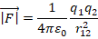
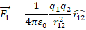
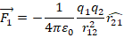
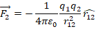
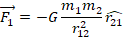
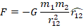

Introduction to Electromagnetism
Prof. Manoj K. Harbola
Department of Physics
Indian Institute of Technology, Kanpur
Lecture - 01
Coulomb�s Law
This is a course on Electromagnetic Theory and any courses starts with Coulomb's Law.
(Refer Slide Time: 00:24)

So, we start with in this lecture, we going to start with Coulomb's law for forces between two charges. Then, we are going to see how this can be confirmed that this is really true, experimental verification. Third, then we are going to solve some examples for forces between two charges. And finally, in this lecture we are going to talk about the force between a point charge and a charge distribution. This is the program for this lecture and based on what we cover today I am also going to give you an assignment, where you solve three or four problems employing these concepts.
(Refer Slide Time: 02:07)
This
is a course on Electromagnetic Theory and any courses starts with Coulomb's Law. (Refer
Slide Time: 00:24)

So, what Coulombs' law says is that if there are two charges points let us take them to be �point charges right now. So, there is a charge q1 and another charge q2 separated by a distance r and for the future, because I am going to develop a notation also. Let us write this as r12 that indicates, the distance between charge 1 and charge 2. Then, the force between them the magnitude force of course, you know from your Mechanics course that force is a vector quantity.
The force between them it is magnitude is going to be equal to and this depends on what units we are going to choose for q 1 and q 2 finally, it is the SI units that we work in. So, I am going to write this in terms of this SI units, it is going to be 4 pi Epsilon 0 where Epsilon 0 is known as the permittivity of vacuum q 1, q 2 over r 1 2 square. That means, if the distance between two charges doubled, because of this square out here.

If there is square out here, the force going to become less by a factor of four, but I just said forces not only quantity which is as magnitude, it also has direction what about the direction of the force. Now, you learnt in your previous classes that, if q1 and q2 are of the same sign, then the force is repulsive. What it means is that, the force is going to be along the same lines as the line joining the charges and they are going to repel each other and the magnitude being the same.
On the other hand, if they are at opposite sign, so let me write opposite out here. If they are at opposite signs, then force is going to be attractive. What that means is, in that case the force is going to be in this direction towards each other. So, I hope this point is clear, but let me make it clear by drawing this picture again.
(Refer Slide Time: 04:53)
This
is a course on Electromagnetic Theory and any courses starts with Coulomb's Law. (Refer
Slide Time: 00:24)

I am drawing two charges q1 and q2 separated by a distance r12 and if the charges are the same, so it is for same I am going to use the color orange with the charges of the same, then the force is repulsive. On the other hand, if the charges are of opposite sign, then the force is going to be attractive. How can we write all these in vector notation? This is very simple way of writing it I am going to write force.

Now, I am write the whole thing, force is a vector with the magnitude 1 over 4 pi Epsilon 0, q1 q 2 over r1 2 square. Now, if I am writing it in the vector notation I have to denote force on 1 or force on 2, let us write the force on 1 which I denote here by this subscript 1 here. It is going to be in the unit vector r12 direction, this hat here denotes the unit vector. Now, you will see that just write r12 vector from going from 1 to 2, so this is r from 1 to 2.
The unit vector is going to be in r12 direction of magnitude unity, if I write like this then you notice that force on 1 is in the direction opposite of r12. So, I have to put in minus sign out of here which I can equally well write as 1 over 4 pi Epsilon 0, q1 q2 over r12 square r 2 1, where r21 is a unit vector form 2 to 1, r21 should be unit vector. You notice that this takes care of everything signs, direction and everything in one shot.

If the forces are, if the charges are the same, then the q1 and q2 this out here is going to be positive and therefore, the sign gives the right direction. On the other hand, if q1 and q2 are opposite the sign changes.
(Refer Slide Time: 08:00)
This
is a course on Electromagnetic Theory and any courses starts with Coulomb's Law. (Refer
Slide Time: 00:24)

So, let us repeat this I am going to take two charges q1 and q2 and write everything in vector notation. So, let me write vector from 1 to 2 as r12, vector from 2 to 1 as r21, I follow this convention all throughout. Then, the force on 1 with proper direction can be written as 1 over 4 pi Epsilon 0 q1 q2 over r12 square, r12 square is the same as r21 square times r 1 to 2 unit vector.
And similarly, force on 2 can be written as 1 over 4 pi Epsilon 0 q1 q2 over r12 square which is same as a r21 square r from 1 to 2 unit vector, this gives repulsion, attraction everything, because now we are taking care of the direction. So, these are this is the Coulomb's law, it gives the magnitude as well as the direction of the force.

How do we check it experimentally? Did Coulomb do experiment with point charges? Are there point charges available with which you could do experiment? The answer is no.
(Refer Slide Time: 09:49)
This
is a course on Electromagnetic Theory and any courses starts with Coulomb's Law. (Refer
Slide Time: 00:24)

You recall that there is a similar law, one goes off and that is Gravitational law and what does that say, that says that the force between two masses F, let us say the masses are m 1 and m 2 and this is r 1 2 vector, then F on 1 is going to be equal to minus G m1 m2 over r12 square, r from 2 to 1 unit vector, this is always repulsive. In gravitation, we have mass does not have a sign, but the form of the law is the same, the way when could check this law by taking too large masses and find in the force of attraction between them.

So, the force is in this direction, this is always attractive. What one could do is that, one could take these masses, solid masses and measure the force between them. We will see later, that this force can be written as if the two masses are concentrated at their centers. So, the force between two perfectly spherical masses, the magnitude will be equal to G m1 m2 over r12 square, where r12 is the distance between their centers and of course, the directions is attractive, so this one.

Can we do a similar thing to check Coulombs law? Let us see that.
(Refer Slide Time: 11:59)
This
is a course on Electromagnetic Theory and any courses starts with Coulomb's Law. (Refer
Slide Time: 00:24)
So,
if I want to look at Coulomb's law I take too large masses and the easiest to
charge are metallic spheres and put charge. Let us say I put positive charge
here, since they are spheres in isolation these charges are going to be all
uniformly distributed, if these two spheres are far away, necessarily charge on
them is movable. Because, that is how we charge them, when we charge them
charged moved on to them. However,
since these charges are mobile when the charges are closed together this is not
going to the situation, these charge are going to move and they are going to
have more and more charges, because they repel further away then they are nearer.
So, here charges repel, so lot of them will go to the back side of the charges
sphere and there will be a less charge in front, with the final picture that if
I take these two charges, charge spheres that the charges are going to be more
concentrated here and less out here more concentrated on the back side and less
in front. As
a result I cannot really think of them being separated by distance which is the
distance between the centers of this charge. And I do not know what this
distribution is, if I do not know what this distribution is how do I figure out,
how far are the charges. So, coulomb's law cannot be checked simply by bringing
two charged spheres of closed to each other and then measuring force between
them, a way out is very interested, the way out of this is at what you can show
is that. (Refer
Slide Time: 14:29)
This
is a course on Electromagnetic Theory and any courses starts with Coulomb's Law. (Refer
Slide Time: 00:24)
If
a force is 1 over r square dependent which we are assuming coulomb's law is
then on a sphere, then if I take a sphere, say metallic sphere and put charges
on it all the charges will come to the surface with the result that there will
be no charge inside a charged metal sphere. So, I state again if a force is 1
over r square dependent or if this particular case of the electric force
between charges is 1 r square dependent, all the charges that we put on a
metallic sphere will come to the surface. (Refer
Slide Time: 16:07)
This
is a course on Electromagnetic Theory and any courses starts with Coulomb's Law. (Refer
Slide Time: 00:24)
So,
the experiment that is done to check this is precisely this you take a sphere
charge it and then take a sphere outside and connect by wire, if the charge on
this is sphere becomes is 0, I know the force field is 1 over r square. And that
is how it is done and this is known as Cavendish experiment and this is confirmed
that it is 1 over r square is the degree that 1 over r square plus minus 10 rise
to minus 17. So, we know very well that this coulomb's law is really 1 over r
square. (Refer
Slide Time: 16:59)
This
is a course on Electromagnetic Theory and any courses starts with Coulomb's Law. (Refer
Slide Time: 00:24)
So,
let us see what we established one force between two charges is 1 over 4 pi Epsilon
0 q 1 q 2 over r square, where r is the distance between them, number two
experimentally verified here, third, because of 1 over r square nature of the force
extra charge on a metal sphere will all come to the surface.